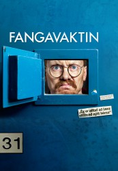

Alternativ: Fangavaktin (Originaltitel)
 
 IMDB-Wertung: 8.5 / 10
IMDB-Wertung: 8.5 / 10  Metascore: 0
Metascore: 0 
In der “Knastschicht” folgen wir dem isländischen Trio aus der “Nachtschicht” und der “Tagschicht” ins Gefängnis, wo Georg und Daníel die Strafe für ihre Beteiligung am Tod ihrer Ex-Chefin Gugga absitzen. Es dauert nicht lange, bis Ólafur sich zu ihnen gesellt – obwohl Georg wie üblich auch hier seine Finger im Spiel hatte. Der Umgang der drei mit ihrer Situation hinter schwedischen Gardinen ist urkomisch; nicht zuletzt auch wegen einigen neuen Charakteren, die auf den Gefängnisflur treten. “Die Knastschicht” ist der letzte Teil der Serien-Trilogie. An die Trilogie knüpft der Spielfilm “Bjarnfreðarson” an.
Jahr: 2009
Dauer: 32 Minuten
FSK:
Land: Island Studio: Stöð 2Tonspuren:
Untertitel: Deutsch,
Auflösung: SD (720x512) Größe: 314 MB
Genre: Drama, Komödie, TV-Serie
Regisseur: Ragnar Bragason
Drehbuch:
Soundtrack:
Darsteller:
 Jörundur Ragnarsson als Daníel, 7 episodes, 2009
Jörundur Ragnarsson als Daníel, 7 episodes, 2009- Björn Thors als Kenneth Máni, 7 episodes, 2009
 Ólafur Darri Ólafsson als Loðfíllinn, 7 episodes, 2009
Ólafur Darri Ólafsson als Loðfíllinn, 7 episodes, 2009 Ingvar Eggert Sigurðsson als Viggó, 7 episodes, 2009
Ingvar Eggert Sigurðsson als Viggó, 7 episodes, 2009 Jón Gnarr als Georg, 7 episodes, 2009
Jón Gnarr als Georg, 7 episodes, 2009- Gunnar Hansson als Friðjón, 3 episodes, 2009
- Sigurjón Kjartansson als Olgeir, 2 episodes, 2009
- Halla Margrét Jóhannesdóttir als Þjónustufulltrúi í banka, 1 episode, 2009
- Rúnar Freyr Gíslason als Tryggvi Breiðfjörð, 1 episode, 2009
 Jóhannes Haukur Jóhannesson als Guffi, 1 episode, 2009
Jóhannes Haukur Jóhannesson als Guffi, 1 episode, 2009- Matthew McConaughey » #220 on STARmeter CELEBS Born Today Celebrity News Most Popular Celebs PHOTOS Latest Stills Latest Posters Photos We Love EVENTS Awards Central Festival Central Oscars Golden Globes Sundance Cannes Comic-Con Emmy Awards Venice Film Festival Toronto Film Festival Tribeca SXSW All Events News & Community LATEST HEADLINES Telluride 2018: Why The Fall Movie Season Is Looking Better Than Usual — Analysis 14 hours ago | Indiewire New ‘Police Academy’ Movie On The Cards? 7 hours ago | The Hollywood News Dave Bautista Doesn’t Know Whether He Wants to Work for Disney After James Gunn Firing (Video) 20 hours ago | The Wrap NEWS Top News Movie News TV News Celebrity News Indie News COMMUNITY Contributor Zone Polls Watchlist YOUR WATCHLIST if (!('imdb' in window)) window.imdb = ; window.imdb.watchlistTeaserData = href : /list/watchlist, src : https://m.media-amazon.com/images/G/01/imdb/images/navbar/watchlist_slot1_logged_out-1670046337._CB470041656_.jpg , href : /search/title?count=100&title_type=feature,tv_series, src : https://m.media-amazon.com/images/G/01/imdb/images/navbar/watchlist_slot2_popular-4090757197._CB470041610_.jpg , href : /chart/top, src : https://m.media-amazon.com/images/G/01/imdb/images/navbar/watchlist_slot3_top250-575799966._CB470041651_.jpg ; The essential resource for entertainment professionalsFind industry contacts & talent representationAccess in-development titles not available on IMDbGet the latest news from leading industry tradesClaim your page and control your brand across IMDb & AmazonTryIMDbProFreeTry IMDbPro Free | Help Sign in with Facebook Other Sign in options doWithAds(function()if ('injected_slot' != 'injected_slot') ad_utils.register_ad('injected_navstrip');); doWithAds(function()if ('injected_slot' == 'cornerstone_slot') ad_utils.inject_serverside_ad('injected_navstrip', '');else if ('injected_slot' == 'injected_slot') ad_utils.inject_ad.register('injected_navstrip'); else ad_utils.gpt.render_ad('injected_navstrip');, ad_utils not defined, unable to render client-side GPT ad or injected ad.); if (typeof uet == 'function') uet(ne); doWithAds(function()if ('injected_slot' != 'injected_slot') ad_utils.register_ad('injected_billboard');); doWithAds(function()if ('injected_slot' == 'cornerstone_slot') ad_utils.inject_serverside_ad('injected_billboard', '');else if ('injected_slot' == 'injected_slot') ad_utils.inject_ad.register('injected_billboard'); else ad_utils.gpt.render_ad('injected_billboard');, ad_utils not defined, unable to render client-side GPT ad or injected ad.); Edit Fangavaktin (2009– ) if ('csm' in window) csm.measure('csm_body_delivery_started'); Full Cast & Crew Series Directed by Ragnar Bragason als
- Pétur Jóhann Sigfússon als Ólafur Ragnar, 7 episodes, 2009
- Lilja Guðrún Þorvaldsdóttir als Jóhanna fangelsisstjóri, 7 episodes, 2009
- Frosti Runólfsson als Skari, 7 episodes, 2009
- Sigurður Hjaltason als Ingvi, 7 episodes, 2009
- Garðar Ómarsson als Biffi, 7 episodes, 2009
- Þröstur Jónsson als Fangavörður, 7 episodes, 2009
- Hallgrímur Ólafsson als Fúsi, 6 episodes, 2009
- Frosti Gnarr Gunnarsson als Ellert, 5 episodes, 2009
- Anna Kristín Arngrímsdóttir als María, 5 episodes, 2009
- Sigurpáll H. Jóhannesson als Hættulegur fangi, 5 episodes, 2009
- Hjörtur Sævar Steinason als Fangavörður, 5 episodes, 2009
- Guðmundur Lúðvík Þorvaldsson als Fangi, 5 episodes, 2009
- Haraldur R. Haraldsson als Fangi, 5 episodes, 2009
- Guðjón Örn Stefánsson als Fangi, 5 episodes, 2009
- Harpa Arnardóttir als Sigurlaug geðlæknir, 4 episodes, 2009
- Halldór Gylfason als Kiddi Casio, 4 episodes, 2009
- Sara Margrét Nordahl als Ylfa Dís, 4 episodes, 2009
- Bjarni Rúnar Heimisson als Fangi, 4 episodes, 2009
- Katla M. Þorgeirsdóttir als Emilía, 3 episodes, 2009
- Júlíus Brjánsson als Hannes, 3 episodes, 2009
- Arnar Jónsson als Sævar, 3 episodes, 2009
- Grétar Magnús Grétarsson als Fangi, 3 episodes, 2009
- Valdimar Kristján Pardo als Fangi, 3 episodes, 2009
- Gunnar Kristleifsson als Fangavörður, 3 episodes, 2009
- Egill Björgúlfsson als Fangi, 3 episodes, 2009
- Guðmundur Fjalar Ísfeld als Fangi, 3 episodes, 2009
- Sigurvin Eðvarðsson als Jónas, 2 episodes, 2009
- Helga Braga Jónsdóttir als Haddý, 2 episodes, 2009
- Örn Árnason als Jón, 2 episodes, 2009
- Margrét Helga Jóhannsdóttir als Bjarnfreður, 2 episodes, 2009
- Björgvin Ingason als Fangavörður, 2 episodes, 2009
- Andri Jónsson als Fangi, 2 episodes, 2009
- Guðni Hilmar Halldórsson als Fangi, 2 episodes, 2009
- Edda Hrund Guðmundsdóttir als Aukaleikari, 2 episodes, 2009
- Bjarki Markússon als Fangi, 2 episodes, 2009
- Bjarni Freyr Björgvinsson als Fangi, 2 episodes, 2009
- Rebekka Guðmundsdóttir als Aukaleikari, 2 episodes, 2009
- Rósa H. Richter als Kona, 1 episode, 2009
- Jón Hinrik Hjartarson als Maður, 1 episode, 2009
Datei: X:\HD-Serien\Island Schicht\3 Die Knastschicht\Die Knastschicht - S01E01.mkv seit 04.09.2018
Festplatte: HD Serien(I-ST)
 Es gibt insgesamt 182 Filme in der Gruppe 'HD-Serien'
Es gibt insgesamt 182 Filme in der Gruppe 'HD-Serien'
")